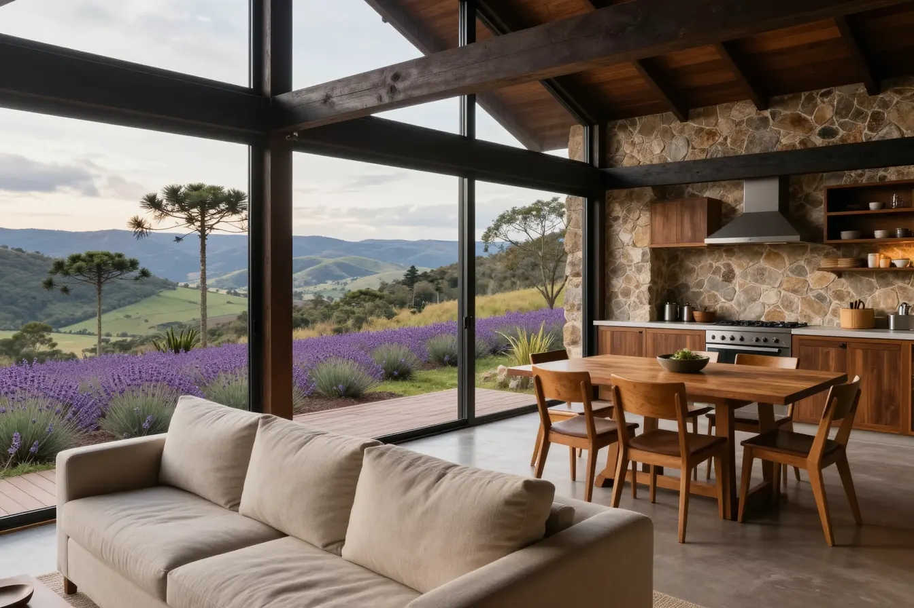

Casa do Mirante
Uma casa de dois quartos no ponto mais alto da propriedade, com cozinha, quintal cercado e a serra inteira na janela.
Fotos
A suíte
Como é a Casa do Mirante
A Casa do Mirante fica no alto do morro, a 300 metros da casa principal: cinco minutos a pé pela trilha das araucárias ou um minuto de carro. A sala tem uma parede de vidro que dá para a serra inteira, uma mesa para quatro e uma cozinha completa.
São dois quartos: um com cama king e outro com duas camas de solteiro, cada um com o seu banheiro. A varanda em volta da casa tem rede e mantas, e o quintal é cercado, por isso esta é a única acomodação que recebe cachorro.
O café da manhã pode ser na varanda da casa principal ou numa cesta deixada na porta às 8h30, sem custo. A lareira da sala aquece a casa toda nas noites frias.
| Item | Como é |
|---|---|
| Área | 78 m² |
| Pessoas | até 4 |
| Camas | uma king e duas de solteiro, em quartos separados |
| Banheiros | dois, com chuveiro a gás |
| Cozinha | fogão, forno, geladeira, louça e utensílios para seis |
| Vista | a serra inteira, do alto do morro |
| Cachorro | até dois, com R$ 80 por estadia |
| Acessibilidade | degraus na varanda; não indicada para cadeira de rodas |
Regras da suíte
- Entrada a partir das 14h e saída até as 12h. Saída às 15h por R$ 150, se a agenda permitir.
- Mínimo de duas noites em estadia com sábado, feriado ou véspera de feriado.
- Cachorro bem-vindo, até dois, com taxa de R$ 80 por estadia.
- Proibido fumar dentro da suíte. No deck e na varanda, pode.
- Silêncio a partir das 22h em toda a propriedade.
As regras completas de sinal, cancelamento e mudança de data estão em Reserva e cancelamento.
Perguntas sobre a suíte
Antes de reservar.
Posso cozinhar na Casa do Mirante?+
Pode. A cozinha tem tudo para preparar refeições; o mercado mais próximo fica a 12 km e indicamos onde comprar queijo e truta da região.
Quantos cachorros posso levar?+
Até dois, de qualquer porte, com carteira de vacinação em dia. A taxa é de R$ 80 por estadia, para a limpeza extra.
Crianças pequenas podem ficar?+
Recebemos crianças a partir de 7 anos, por causa da lareira e do deck alto.
A cesta de café tem custo?+
Não. É o mesmo café da casa principal, entregue na porta às 8h30 se você avisar na véspera.
Dá para ir a pé até a casa principal à noite?+
Dá, pela trilha iluminada das araucárias, de cinco minutos. Deixamos uma lanterna na casa.
Outras opções
Ou talvez esta.

Suíte Neblina
R$ 890 a noite
Ver a suíte
Suíte Lavanda
R$ 1.090 a noite
Ver a suíte
Como chegar
Reserve o seu
silêncio.
Última parada: o portão de madeira, à direita.
@perfil-demonstrativo